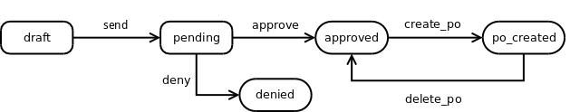

<section class="oe_container">
    <div class="oe_row oe_spaced">
        <h2 class="oe_slogan">Purchase Request</h2>
        <p>
        This module is designed to manage equipment o services purchase requests, subject to approval by a department leader.
        </p>
        <h3 class="oe_slogan">Workflow</h3>
        <div class="oe_demo oe_picture oe_screenshot mb16">
            
        </div>
        <p class='oe_mt16'>
The purchase request workflow starts creating a draft request. When the user 
pushes the <strong>Send</strong> button, an email is sent to user's supervisor seeking his/her approval. The supervisor 
or validator will accept or deny that purchase request. If accepted, a Purchase Order may be generated. If that 
Purchase Order is deleted, the purchase request will return to <strong>Accepted</strong> state.
		</p>
</section>
